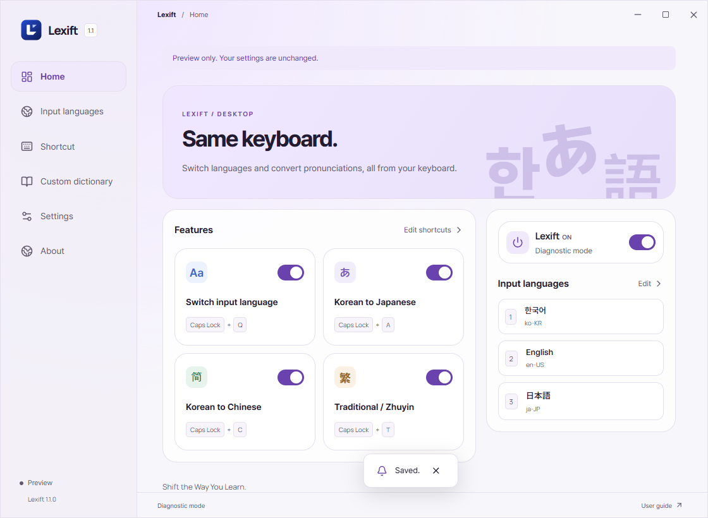
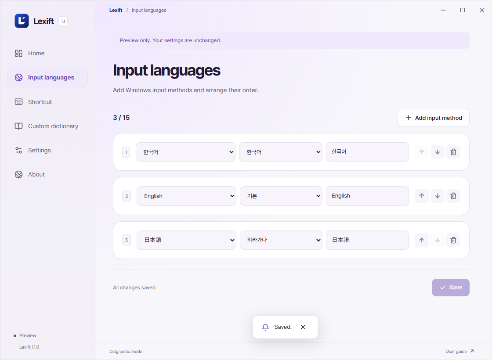
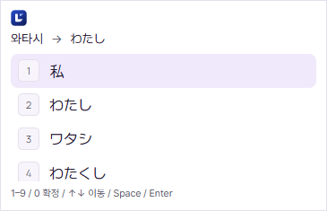
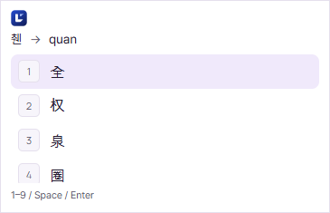
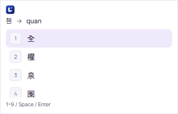
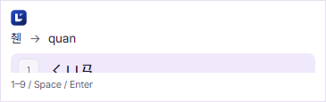
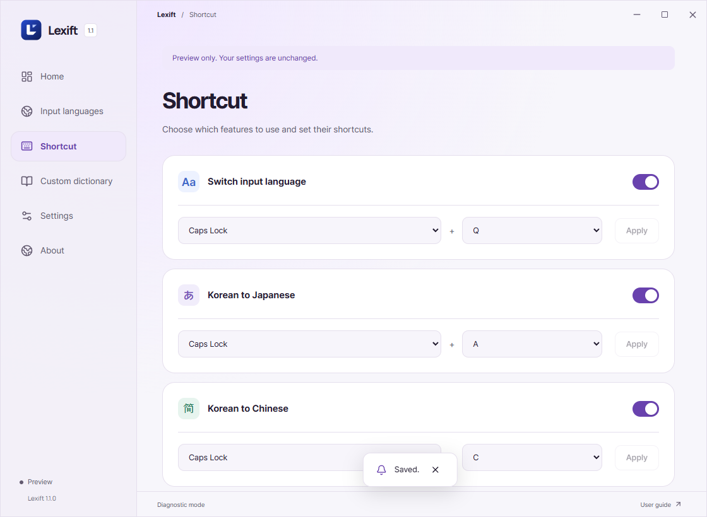
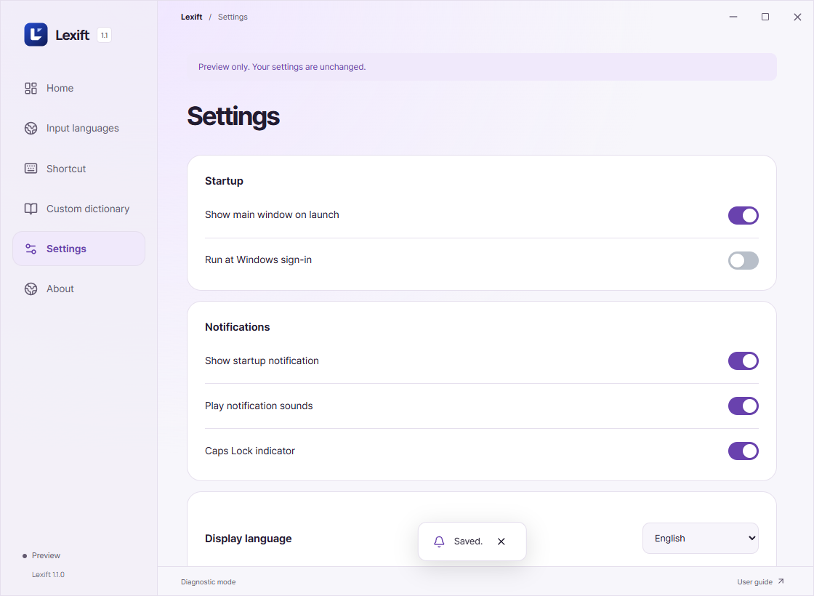

Overview
Switch input languages and type Japanese or Chinese with Hangul.
Windows 10/11, 64-bit.
Download 1.2.1 ↗

Installation
Quit any running copy of Lexift from the tray and run the installer. Add input methods in Windows, then register them under Input languages.


Input switching
Select with the arrows and Enter, or press a number.

Japanese input
Type the Japanese reading in Hangul: 와타시 → 私. Press again to turn it off.
↑↓ move / Space or Enter confirm / 1–9, 0 select / Esc close.
Turning on conversion switches to Hangul input.


Simplified Chinese
Type the Chinese reading in Hangul: 니하오 → 你好. Press again to turn it off.


Traditional / Bopomofo
Cycles through Traditional → Bopomofo → OFF. 중궈 → 中國 / 니하오 → ㄋㄧ ㄏㄠ. Bopomofo is shown without tone marks.




Pinyin tones
Enable Pinyin tones under Shortcuts. Type ke in Latin input mode and press Caps + 3 to get kě.
1–4: set tone / 0: remove tone. The keypad works with Num Lock on or off. Numbers select candidates while a candidate window is open.


Settings
Use the checkboxes to enable features. Click Apply after changing a shortcut. Duplicate shortcuts cannot be saved.
Defaults resets all settings and the custom dictionary.


Custom dictionary

Troubleshooting
Shortcuts do not respond
Check that Lexift is running in the system tray. Enable the feature in Settings and click Apply. Change the shortcut if another app uses the same keys.
A language is missing from the switcher
Install the language and its input method in Windows Settings, then add it to Lexift’s input slots.
Typing Hangul shows no candidates
Turn on conversion and type in Hangul mode using the Korean input method. Japanese conversion requires Microsoft Japanese IME. Restart Lexift after installing an input method.
The Japanese engine keeps stopping
Quit Lexift from the tray and rerun the installer. If the error persists, include the exit code in your report.
The word you need is missing
Add names and other custom terms to the user dictionary. For Japanese long vowels, use a hyphen (-): 코-죠- → こうじょう.
Arrow keys or Esc do not work in Caps + Q
Quit Lexift from the tray and rerun the installer. If the error persists, include the exit code in your report.
Tone marks are not applied
Enable Pinyin tones in Settings. In English input mode, type ke, then press Caps + 3. Close any candidate window first and place the cursor directly after the syllable.
Input fails in one app
Click the input field again and compare with Notepad. For administrator apps, quit Lexift and relaunch it as administrator. Password and other secure fields are unsupported.
Bug reports: include the app, Windows version and steps to reproduce.
GitHub Issues ↗